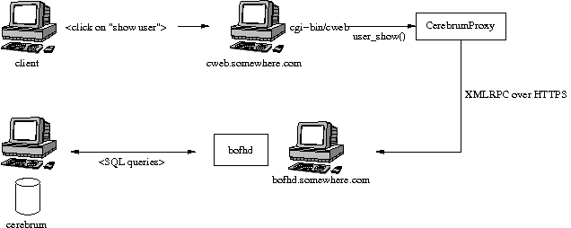
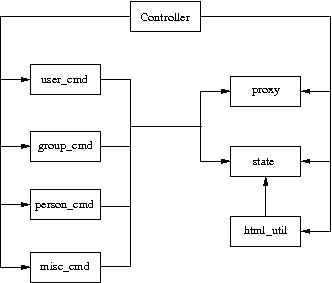

Table of contents
This document describes the user management framework CWEB in some of the Cerebrum [1] installations.
Today, 2007-03-14, Cerebrum offers essentially three user management interfaces to the database. In each case, the overall architecture is the same – there is a client entity that communicates with a Cerebrum server (bofhd, [2]), which in turn queries the Cerebrum database. The clients are:
- JBofh, a command-line interface client written in Java that communicates over XMLRPC [3] with the bofhd.
- Cereweb, a web-based user administration interface to Cerebrum client used chiefly at NTNU.
- CWEB, another web-based user administration client used primarily with Indigo-OFK and Indigo-giske projects.
This memo is on the workings of the CWEB framework.
The CWEB framework is based on CGI. The CWEB modules are set up to be launched from a CGI script. The modules parse the command passed to the script by a web server, and communicate with a Cerebrum server bofhd potentially running on a different machine using XMLRPC [3]. The web pages themselves are rendered with the help of Zope page templates [4].
A sketch of the components involved in passing a request to view user information is presented below.
The CWEB “interface” is launched by running the CGI-script cweb.py. The CWEB itself consists of several components, each of which is responsible for its own task. The components are:
- Controller class (in file Controller.py) is the wrapper around all
actions and it decides which method (in CWEB) corresponds to which user action (i.e. a magic value submitted via an HTML form). The controller wraps the command execution in a try-catch to present a nicer error to the end user. Also, the controller restricts the available commands via a cereconf.CWEB_AVAILABLE_COMMANDS. Note that this has nothing to do with the web pages presented to the end users. I.e. the web page may very well “offer” a command, whereas the controller would lock such a command out. Obviously, such a situation is probably a bug, but this discrepancy is nevertheless possible.
- Command classes (in file Commands.py) are classes that implement
various CWEB commands. Usually a user action (such as “find person”) is passed to a suitable command object. The command object handles the request and calls the necessary methods to present the result (i.e. the command object outputs the html page with a result suitably formatted). Various command objects are hooked to a controller object instantiated by the CGI-script.
- CerebrumProxy class (in file CerebrumGW.py) is a proxy class that
relays all commands from CWEB to the bofh daemon. This class is responsible for establishing a (preferrably) HTTPS connection to the bofhd, does a bit of marshalling and massaging the input/output values. A CerebrumProxy, object, much like the command objects, is hooked to a controller object. The controller also passes the the proxy object to command objects, so the entire structure is linked pretty tight together.
- State class (in file State.py) keeps track of the client state (who
is logged in, their privilege level, which person is being displayed, and so forth) with the help of Cookies and gdbm database. A state object fetches its state from cereconf.CWEB_STATE_FILE. The controller object initializes one state object and passes it around to whatever object needs it.
A presentation layer (in file Layout.py), which is used to present user with web pages (either to fetch a query, or to display query results). The presentation layer is a collection of classes to help manipulate zope page templates [4]. Additionally, the page templates themselves have to be written. We’ll look into this in greater detail in CWEB presentation layer.
An overall sketch of the CWEB components is presented below.
A controller object holds pointers to everything. Various command objects consult the state and the proxy objects to fetch the supplied values and pass on commands to bofhd respectively.
In general, CWEB is just a client, much like any of the three mention in Introduction. By design, the main security decisions (authorization, mostly) are made by the tailored bofhd version. Whichever commands it allows, are available to users. Ideally, even if CWEB is compromised, it will not be possible to attack the Cerebrum database.
CWEB operates with 3 privilege levels: c3, c2, c1. c3 level are the superusers and all commands supported by an installation are available to them. c2 level is reserved for local IT administrators and they have the permissions to look users/people up and change users’ passwords. c1 are ordinary users and they can only see the information about themselves and change their own passwords.
When a user logs into CWEB, CWEB establishes the user’s privilege level. This happens in modules.bofhd.auth.py. Currently the permissions are awarded based on either group membership (for c3) or the ability to perform certain operations (c2 is awarded to all who can set passwords).
Each privilege level presents a different interface (e.g. a c1 user will never “see” a web page with a “create group” link). However, a c1 user can still craft an url and “send” a “create group” request. The verification of a request is three-folded:
- The controller object checks whether the command is at all available. The commands available on an installation can be constrained through cereconf.CWEB_AVAILABLE_COMMANDS
- A suitable command object or the cerebrum proxy object (see figure in section CWEB architecture) will check if the particular user level can perform the command (client-side). (FIXME: Currently this happens only sporadically and is not enforced through. This should perhaps be fixed, if nothing else, than to give a klient a better error message?)
- Once the bofhd gets the request from the cerebrum proxy object, it performs permissions checks once a method for a particular command is invoked.
Before a user can issue any commands, (s)he must log in (cweb typically greets the users with a login page). Username/password are transmitted with HTTPS, so there is no possibility of leaking the information there.
However, there exists another issue that needs to be addressed. A browser can cache form values, and re-submit them, once the same form is encountered again (e.g. if the user presses the “back” button in the browser, after having logged out). We cannot allow this ‘resubmission’ to happen.
Therefore, each time a login page is loaded, a random key K is inserted into the login form (as a hidden field). K is registered in the state database prior to displaying the login page. When the user submits the data (HTTP POST request), cweb login procedure checks if K submitted with the page exists in the state database. If it does, then the login data is processed, username/password is verified, the user is logged in, and K is removed from the state database. If K does NOT exist in the state database, the login information is discarded (without verification), and the user is asked to log in. Additionally, to “force” the browser to reload the login page (rather than reuse old values), HTTP cache directives are issued that prohibit the browser to cache the page. This is a convenience only feature (to avoid certain error conditions while pressing the “back” button to reach the login page), and has no security merits.
A word on the presentation layer. As mentioned, CWEB uses Zope page templates [4] to generate webpages. ZPT is a framework that allows to merge HTML with dynamic page generation. Roughly, a page template is loaded from a file, and can be rendered (to HTML) while performing certain substitions within the template. The resulting HTML is then returned from CWEB as “the result” of running a CGI script.
ZPTs, Zope page templates, are regular HTML files, with certain directives embedded into them. In CWEB these directives are used to merge dynamic content (e.g. user names, person names, affiliations, etc.) into HTML pages generated by the CGI script.
When a ZPT is rendered (__call__ method for suitable class in ZPT), every magic “directive” (they are written in a language called TAL, template attribute language [6]) is replaced by a value from a context dictionary which is supplied to the render call. CWEB puts all the required values into such a dictionary before asking ZPT to render a template.
Templates are located in contrib/no/Indigo/web/templates. They are also grouped by sites (cereconf.CWEB_TEMPLATE_SITE_DIR), so that a site-specific template is preferred to a default one (...web/templates/default), when both exist. The templates are loaded in Layout.py:MyPageTemplate.load.
In order to give all of the pages similar look, we use macros in ZPTs in CWEB. Normally, you would not need to define your own, just know how to use the existing ones. There is one macro in CWEB – “page”. Today, 2007-03-19, it has four different incarnations – for displaying user, group and person query results and a general macro that’s used for everything else.
The general macro (outer.zpl) defines a layout that looks approximately like this:
+-------------+
| header |
+-+-----------+
|m| |
|e| |
|n| bodyframe |
|u| |
| | |
+-+-----------+
“menu” and “bodyframe” in the figure above are macro slots (i.e. metal:define-slot), called “menuframe” and “bodyframe” respectively. “menuframe” is filled with a suitable menu (selected based on a privilege level) and “bodyframe” is populated by a template specific to the command being run. This way all pages have the same general look.
Typically a page for doing any kind of task (say, a query page for locating a user, user_find.zpl), will include something like this:
<span metal:use-macro="tpl/macros/page">
<span metal:fill-slot="body" tal:omit-tag="">
... at the top of the page. This way, a page (for asking for username search criteria in our example) will look “the same” compared to all other user pages. Note the string tpl/macros/page. tpl is the name of the object in python code that holds the macros. macros is a fixed string (fixed in the ZPT framework) to designate that whatever follows names a macro and finally page is the name of the macro that has to be used.
The other three “page” macro incarnations, user_frame.zpl, person_frame.zpl and group_frame.zpl (that are very similar, actually), are used to fill the “bodyframe” slot of the general outer macro. They all look like this:
<span metal:define-macro="page" tal:omit-tag="">
<table>
<tr>
<td><h1 tal:content="title">title</h1></td>
<td><a tal:replace="structure python:help_link(title_id,'')"></a></td>
</tr>
</table>
<table>
<tr>
<td><span metal:define-slot="body" tal:omit-tag=""></span></td>
<td><iframe src="about:blank" name="helpframe" frameborder="0"> </iframe></td>
</tr>
</table>
</span>
Each page is generated in two steps: first step is the content that ends up in the “bodyframe”. Once it has been generated, it is embedded into the “outer” pager (controlled by the outer.zpl) macro. This “embedding” of one page into another happens in Layout.py:SubTemplate.show() and Layout.py:MainTemplate.show().
Okey, so how exactly does all of this fit together? Initially, the only “interface” available is two input boxes for logging in (username and passwords). Once a user has logged in, (s)he is presented with an interface suitable for his/her privilege level (Layout.py:MainTemplate.get_menu() fetches the right menu template). Each command fills the “bodyframe” slot in the figure mentioned previously. The result of each command fills the “bodyframe” slot as well. E.g. person commands (handled by Commands.py:PersonCommands) usually end up by calling template.show(...), where template is an instance of PersonTemplate. To render such a PersonTemplate template, two things are required:
- a macro for the body layout (person_fram.zpl), which tells where the body of the resulting page goes.
- a template for the command result (specific to each command), that actually is the body of the resulting page.
Typically, in order to introduce a new command, or display an additional result, one would only need to fix the template for the command result. The rest of the web page layout/infrastructure would simply “just work”.
The zope page template framework is not really complicated, but there are many pieces that have to work together, which makes it somewhat difficult to get a grasp of the framework. There are templates and macros, that define the layout of the webpage, there is some python code that massages the results in python and passes commands to bofhd, and then there is bofhd which actually executes the commands. The easist way of understanding how it works it to trace an existing command, such as “find person” all the way through.
Assuming that you want to extend a running instance of CWEB, here are the places where you can start tweaking.
Perhaps, it is easiest to do this by following an example through. Suppose you want to make a function, “punish user” available to the c2 and c3 users. Let’s assume that punishing a user means setting a random password and removing a group membership (supplied by the operator). There are essentially two inputs here – user name and group name. There is a number of possible error situations, but we’ll deal with them later.
You’ll have to go through roughly these steps:
Find out which page is to be supplemented with a link to the “punish user” command. Suppose you want to make a link from the main menu. Then a template for c2 and c3 users can be extended thus:
<dt>Menu <dd> <a href="?action=show_person_find">Find person</a></br> <!-- same list as before --> <a href="?action=show_punish_user">Punish user</a></br>The next time any page is loaded by a c2/c3 user, they’ll see a clickable link that leads them to the show_punish_user command/page.
... which brings us to the next point – the template for the “punish user” command (i.e. which page is to be displayed when executing show_punish_user).
Let’s assume that we need a text field (for the username) and a submit button. A prospective template may then look like this:
<!-- remember our macros to give all pages the same look --> <span tal:define="title string:Look for users to punish" tal:omit-tag=""> <span metal:use-macro="tpl/macros/page"> <span metal:fill-slot="body" tal:omit-tag=""> <form action="#" method="get"> <input type="HIDDEN" name="action" value="do_punish_user"> <dl> <dt>Username <dd><input type="TEXT" name="user_name" size="20"> <br> <dt><input type="TEXT" name="group_name" size="20"> </dl> <input type="SUBMIT" value="Punish!"> </form>The worthy key points here are name and value attributes. These are the “tags” we’ll need later to fetch the proper values from the UserCommand class.
Let’s call our template user_punish.zpl. If the template is general enough, it should probably end up in contrib/no/Indigo/web/templates/default. Or, if the template is installation-specific, then it should be placed in contrib/no/Indigo/web/templates/<institution>.
To summarize, a template in this case needs:
- a form (<form>) through which a request is submitted.
- a standard header, so that the query page conforms to the overall layout and looks “the same” as the rest of the CWEB web pages. This is what the use-macro is for.
- a few tags within the form that will let the Command class to identify various parts of user input. It does not matter what they are called, however, the tags should be unique within one template and the name attribute of the <input> that registers which action should be called in the controller must be called action.
Keep in mind that we’ll need a second template, to present the output of the “punish user” command to the user.
Now, we have a link in the menu and a template to use when the link is clicked. What we need is to establish a “connection” in the Controller class between the “show_punish_user” action and the template to be displayed. This is accomplished by registering the proper entry in the Controller.action_map dictionary:
def controller(self): action_map = { # as before 'show_user_punish': [self.html_util.show_page, Layout.UserTemplate, 'user_punish'], }What does all of this mean? Well, when the controller sees the action “show_user_punish” (which is exactly what would happen, because of the URL with ”?action=show_user_punish”), it’ll execute show_page function with a UserTemplate using the user_punish.zpl template that we’ve just designed. Yay! We are ready to move on ...
... to actually implementing the punishing part. When the operator pushes the “Punish!” button, we want to call the command that actually does something to a user. So, once more, we need to tie the action in the user_punish.zpl template to whatever method implements the command; and that happends in action_map:
def controller(self): action_map = { # as before 'show_user_punish': [self.html_util.show_page, Layout.UserTemplate, 'user_punish'], 'do_punish_user': [self.user_cmd.user_punish], }The next time the operator hits the “Punish!” button on the web page, the controller will call user_punish method in class UserCommands ...
... which we now have to implement. user_cmd in the previous bullet is an instance of class UserCommands, and since we want to perform an operation on a user, it makes sense to place the code there.
We have to perform two distinct operations here: scrambling the password and removing a specific membership.
So, let’s deal with the password scrambling first. We need to perform roughly these commands:
Check that the operator can in fact punish users:
def user_punish(self): html_util = self.state.controller.html_util if self.state.get("authlevel") < 'c2': html_util.error("Insufficient privilege to punish users") returnIf the operator cannot punish users, then there is no point in asking bofhd to perform anything. (FIXME: the multiple dotting is a bit ugly. Since all these classes are tightly coupled anyway, perhaps it makes sense to make this a bit easier?)
So, assuming the operator has permissions, whose password are we scrambling? Well, remember that name attribute with value user_name in the HTML form? That’s exactly what we want:
def user_punish(self): # as before user_to_punish = self.state.get_form_value("user_name")The victim is found!
Now we actually scramble the password. There is already a command to change a user’s password, so we’ll just reuse it:
def user_punish(self): # as before user_to_punish = self.state.get_form_value("user_name") candidates = self.cerebrum.user_find("uname", user_to_punish) if len(candidates) != 1: html_util.error("User is not unique!") return account_id = candidates[0]['account_id'] # set the password now. None means give random password self.cerebrum.user_password(account_id, None)So far, so good. But what if setting the password fails on bofhd’s end (e.g. the db is down or a transaction is aborted)? Well, in that case bofhd will raise an exception which will be “forwarded” by the cerebrumProxy and caught by the controller. The user_punish is not involved in handling this kind of errors.
Now that we have scrambled the password, we can move on to removing the membership. Much like with the user name, the group name was in an <input>-element with attribute name set to group_name. Thus, we collect the name, and proceed much like before:
def user_punish(self): # as before group_name = self.state.get_form_value("group_name") groups = self.cerebrum.group_search("name", group_name) if not groups: html_util.error("No group matches name '%s' % group_name) return elif len(groups) > 1: html_util.error("Too many groups match name '%s'" % group_name) return group_id = groups[0]["entity_id"] # ok, we've got both account_id and group_id -- register change. self.cerebrum.group_remove_entity((account_id,), group_id)And finally, at least some sort of user feedback would be nice. Since none of the existing templates fit, we create a minimal one – user_punish_ok.zpl:
<span tal:define="title string:User punished" tal:omit-tag=""> <span metal:use-macro="tpl/macros/page"> <span metal:fill-slot="body" tal:omit-tag=""> <p>User punished!</p> </span> </span> </span>... and then amend user_punish with a report page at the end:
def user_punish(self): # as before tpl = UserTemplate(self.state, "user_punish_ok") return tpl.show({}) # end user_punishNow we are done, and we can punish users left and right.
So, to reiterate. To implement a new command, you’d need:
- About two templates (one for displaying the “dialogs” that ask for operator input; and another for displaying the results).
- Hook up the new functionality somewhere (a suitable menu, a particular templates (such as e.g. person_info.zpl))
- Link up the forms with the commands (in Controller.py)
- Implemented the commands (somewhere in Commands.py, and perhaps CerebrumGW.py if the proxy needs to do something fancy).
- Implement the necessary functionality bofhd-side, if needed (in bofhd_go_cmds.py)
- profit!
Assuming that you want an instance of CWEB up and running, these are the software requirements and configuration options you have to tweak.
In addition to all of the software requirements for Cerebrum, a CWEB installation requires zope page templates [4]. Make sure that the prefix where the software is installed is available to the user that renders the pages (e.g. CGI scripts may be run by user nobody)
Furthermore, mx.DateTime must be installed and accessible from python (store users, package is called python-module-egenix-mx-base).
Here is a short list of things you should keep in mind when configuring CWEB on a new installation.
Install zope page templates [4]. Version 1.4 would do nicely. It’s probably best to install it to /site. Make sure that the user running CWEB has access to the right python and has /site/lib/... in PYTHONPATH.
Define several variables in cereconf.py, so that CWEB can locate templates and its components:
CWEB_TEMPLATE_DIR The “root” directory well all templates are located. CWEB_TEMPLATE_SITE_DIR The name of the directory with site-specific templates. E.g. “ofk” or “giske”. Such a directory must exist under CWEB_TEMPLATE_DIR CWEB_BOFH_SERVER_URL Location of the bofhd that the CWEB framework passes the commands to. The format looks like this “protocol:host:port”, where “port” is optional. The protocols can be “http” or “https”. “https” is recommended. CWEB_LOG_FILE Logfile for the CWEB framework (the logger is fetched from the python’s logging framework. We may want to change that in the future. In that case, this variable will disappear). This is useful mainly for debugging. CWEB_STATE_FILE Client-state file (basically, a bunch of cookies in a gdbm database). CWEB_ACTIVE_SOURCE_SYSTEM Name of the authoritative system where people must have affiliations to be considered ‘active’. Used by bofhd. Typically, only active people are returned as query results. CWEB_AVAILABLE_COMMANDS Is a sequence of function names that are available in the CWEB framework. Although each new installation potentially needs a bunch of new templates, the code for processing commands may remain unchanged. This variable can be used to “turn off” some functionality, without any code changes to CWEB/bofh. BOFHD_AUTH_LEVEL Is used by bofhd to partition the users into superusers, lita and regular users. It’s a dictionary from strings (‘super’, ‘schoolit’, ‘other’) to numerical values designating privilege thresholds. BOFHD_NEW_GROUP_SPREADS is a sequence of spreads (spread names, i.e. code_str) always given to groups created via the CWEB interface. Also, make sure that the directories actually exist (e.g. the directory for log/state files).
Fix config.dat for bofhd. We need to include at least Indigo/bofhd_go_cmds.
Remember that each new installation may need its own templates. This may require changing setup.py to include new directories and all the zpl-files.
Apache has to be configured as well, and there are several key points in that configuration as well.
- Don’t forget the SSL-certificates.
- /etc/httpd.conf. The easiest is probably to migrate the /etc/httpd.conf from an existing installation.
- Don’t forget the logos (supplied by the institution that requested CWEB) and a stylesheet.
- Set up symlinks from whichever directories /etc/httpd.conf declares to cweb.py in the installed cerebrum/CWEB tree.
So, what does one do, when nothing works? Unfortunately, there is no easy answer. But here are a few things you can try:
Have a look in the apache logs. Everything written to stderr ends up there. Occasionally, you may see something like:
Traceback (most recent call last): File "/site/opt/apache-ssl/cgi-bin/cweb", line 7, in ? import cerebrum_path ImportError: No module named cerebrum_path... which may prove helpful (in this case the CGI script was run by the wrong python). The location of the apache logs is configured in /etc/httpd.conf (typically, /site/opt/apache-ssl/no.usit.<sitename>.cweb_<port>/logs/). Apache logs are the first step in solving “internal server error” messages.
Have a look in the CWEB logs. cweb.py configures a logger that writes to cereconf.CWEB_LOG_FILE. Misspelled template names result often in:
IOError: [Errno 2] No such file or directory: '...templates/default/macro/outer.zpl'It does not have to be a misspelled name, though. Check the file permissions as well (and remember, they have to be accessible to whichever user executes the CGI script (typically nobody)).
If anything breaks in the “Python”-part of CWEB, the error messages will end up in this log. Useful for tracking KeyErrors, UnboundLocal and the like that occur in the Python code.
Occasionally one needs to extend bofhd, to implement some functionality. If anything breaks there, it’s bofhd’s log that you should have a look at. Typically, /cerebrum/var/log/cerebrum/bofhd.py/log. Check logging.ini for the key bofhd. bofhd exception would typically reach the rendered web page, though, so the error should be obvious (page says “list index out of range”, the bofhd log contains the traceback, and it should be fairly easy to identify the problem).
The worst kind of errors is the one when something is wrong with the TAL directives within a new page, but it’s unclear what exactly failed and where. The ZPT framework is rather terse when it comes to error reporting:
File "/site/lib/python2.4/site-packages/ZopePageTemplates/__init__.py", line 86, in pt_render raise PTRuntimeError, 'Page Template %s has errors.' % self.id PTRuntimeError: Page Template (unknown) has errors.That is not really helpful. TAL has a directive for trapping errors – tal:on-error. It behaves like tal:content and can be “wrapped around” the erroneous page to potentially gain some insight as to why things are failing:
<span tal:on-error="python: '''TAL error: type:%s; value:%s''' % (error.type, error.value)"> <!-- page innards go here --> </span>E.g. if you wrote something weird in a tal:content directive, this may help explain what went wrong. The results will be displayed in the rendered web page.
If you are still no closer to solving the dreaded ‘Page Template <something> has errors’, it’s time to examine the template page carefully. Comment parts of the template page, and locate the failing directive. Watch out for proper placement of quotes, doublequotes, semicolons, and the like. Are any closing html tags missing? Are the elements nested properly (i.e. do opening and closing tags match)?
| [1] | Cerebrum project. <http://cerebrum.sf.net/>. |
| [2] | Bofhd - server for remote administration in Cerebrum. Development documentation is available in cvs, doc/devel/bofh.rst. |
| [3] | (1, 2) XMLPRC. |
| [4] | (1, 2, 3, 4, 5) Zope page templates. |
| [5] | ZPT for newbies. Lots of useful information. |
| [6] | Template Attribute Language. |